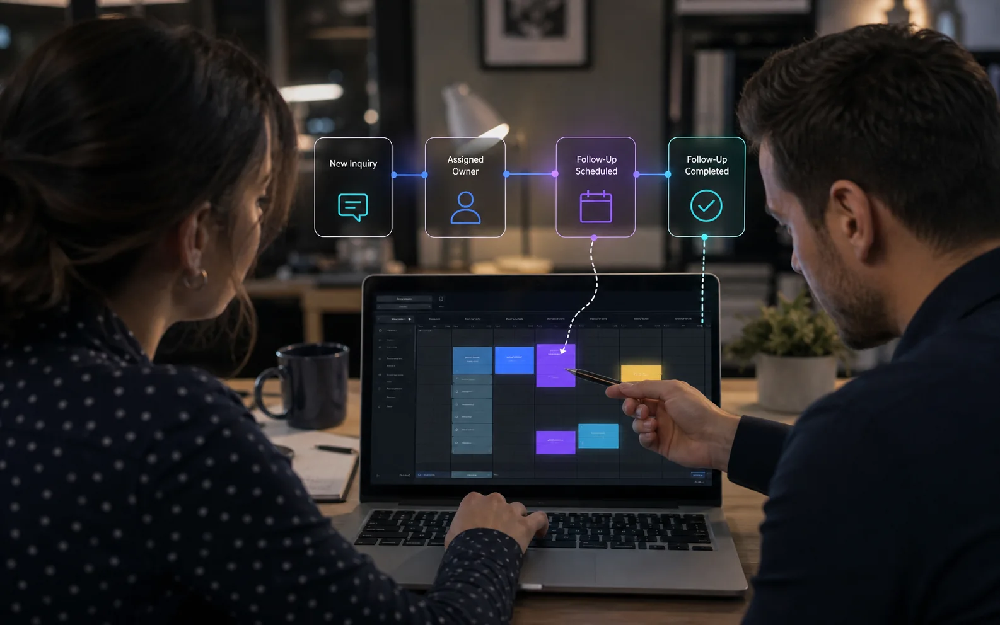

Source-aware intake
Normalize inquiries from approved channels without losing where they came from or what the prospect originally asked.
Capture inquiries in one place, acknowledge them quickly, collect missing details, assign ownership, and keep the next action from depending on memory.
Website forms, direct email, social messages, referrals, and calls can all create different follow-up habits.
A practical workflow does not simply send more messages. It captures the original context, checks whether key information is missing, applies agreed routing rules, and keeps a person responsible for the outcome.
The best design depends on the sales cycle, lead volume, services, qualification criteria, and team responsibilities.
Normalize inquiries from approved channels without losing where they came from or what the prospect originally asked.
Use the lead’s actual request, service, and context rather than generic sequences that ignore intent.
Create or update the record, notify the right person, and surface leads that remain untouched beyond the agreed window.
Offer an appropriate booking path only when the lead has enough information and the service is a potential fit.
Define when to remind, when to stop, and when a person should decide the next step instead of endlessly messaging.
Measure response time, qualification completion, handoff quality, and stalled opportunities without inventing attribution.

Automation must respect consent, frequency, local marketing rules, opt-outs, and the difference between an inquiry response and promotional outreach.
It should also make it easy for a person to see the conversation history, correct information, pause a sequence, and take over.
Bring the channels, steps, decision rules, and team responsibilities that make up your current lead process.